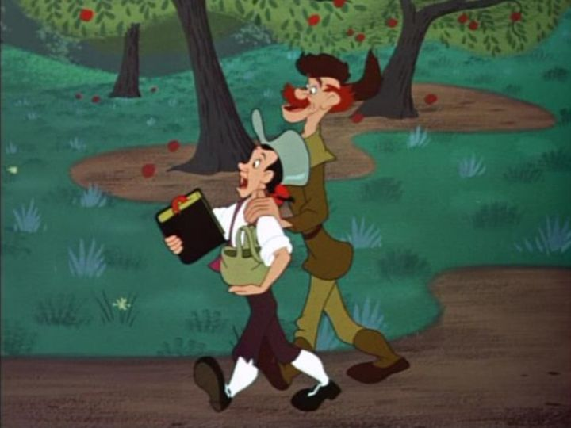

"Melody Time" was yet another of Disney's odd "package" movies in the 1940's, produced in part to struggling finances, and in part because of WWII and the effects it had. Aside from the two-short package of "The Adventures of Ichabod and Mr. Toad," "Melody Time" would be the last one, released in 1948, before the studio got back on track with traditional feature-length movies. While "Fantasia" had plans to produce regular sequels that never fully transpired, movies like "Melody Time" were spiritual successors in a way. This movie in particular was like the "pops" version of the classical music concert, with songs that had more traditional stories, performed by some of America's popular artists at the time. Some of the guest singers included TV star Roy Rogers and his horse Trigger, the Andrews Sisters, Dennis Day (nor Doris Day, which I keep confusing his name with), and many others. They each perform fine, although I can't help but wonder if the short films would play better WITHOUT vocal lyrics overexplaining the story. The singers don't actually appear in person either, except for Roy Rogers in a bizzare live-action introduction to the final short 'Pecos Bill."The best of the seven shorts, in my opinion, are "Bumble Boogie" (a music-only short to the song "Flight of the Bumblebee," resembling most the style and spirit of "Fantasia"), and the two American-legends shorts. Those include "The Legend of Johnny Appleseed," the scrawny pioneer that planted appleseeds across the country, a sweet story and a classic in my memory, although it leans heavily in Christian faith-preaching. And the aforementioned "Pecos Bill," with tremendous and hilarious pride for the setting of Texas, about a wild cowboy and his love for another girl that holds her own on the wild plains. Those two American-character shorts stand out a little for their topic, and it's strange to not have packaged them with other similar shorts. "Melody Time" and "Make Mine Music" are practically meant to be packaged as a pair, and shorts from both could be rearranged to better fit thematically.Other shorts include "Once Upon a Wintertime," which is cute but a little dull, although it's frequently used now as the go-to Disney winter short. "Little Toot" goes on a little long, and has a lot in common with the short "Pedro" in "Saludos Amigos." "Trees," based on a poem, in a beautiful abstract short that could have been a deleted scene in "Bambi," but is the most boring when compared to the others. And "Blame It on the Samba" is the strangest of all, feeling like a deleted sequence from "The Three Caballeros," brining back Donald Duck, Jose Caricoa, and that strange wild woodpecker creature that was introduced in "Caballeros" for a dance sequence (there's even another live-action Spanish musician joining in the footage).  The shorts are OK, but of course, none of them feel like theatrical quality. The poor matching of thematic tones also doesn't help, making this seem like a bunch of leftover ideas from the package films that came before. At best, "Melody Time" is a passable diversion of Disney-style animation and antics, and is only really worth watching for completionists. Even if you want to watch the better shorts in the movie, you can probably access them to watch alone, as the shorts were frequently re-used after the movie's release.
- "Ani" More reviews can be found at : https://2danicritic.github.io/ Previous review: review_Megalobox Next review: review_Memories